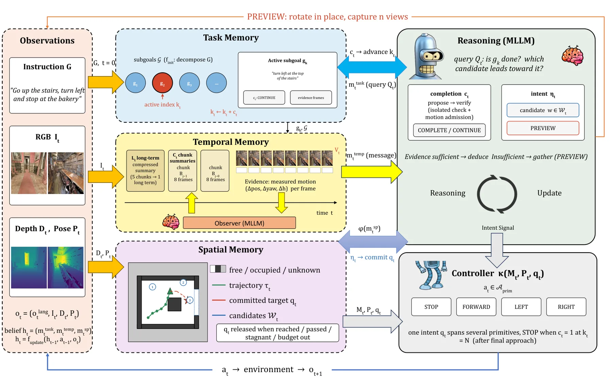
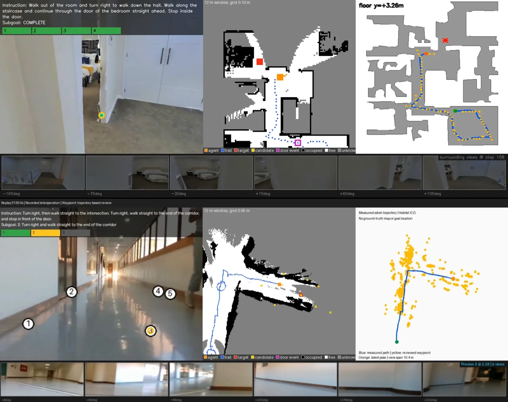
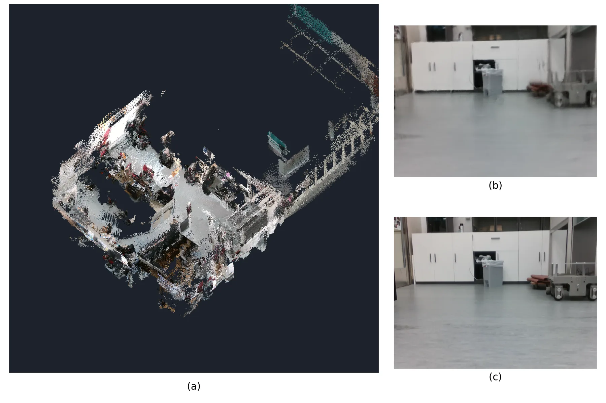

导航智能体到底该记什么：零样本 VLN 的时空记忆组织
What Should a Navigator Remember? Spatiotemporal Memory for Zero-Shot Vision-Language Navigation
三路记忆（任务/时间/空间）+ 8B observer + 8B reasoner + 几何控制器；R2R-CE val-unseen SR 0.263 / SPL 0.196 / nDTW 0.379 / RSR 0.802。去时间记忆 SR 0.190、路径 16.9→39.1 m、步数 131→292（OSR 反升，说明“到得了停不下”）；去空间 0.205。要注意 post-training 基线 SR 0.647–0.680，本文“最高”只在 Qwen3 零样本组内成立。
success rate
path length without temporal memory
relative success rate
primitive-action SR
作者、单位与技术谱系 · Research context
作者与单位
研究脉络
- R2R-CE（Krantz et al., ECCV 2020）评测基座关系：本文的主实验与所有指标都建立在 R2R-CE val-unseen 上，指标定义（SR/SPL/NE/OSR/nDTW）也沿用该基准。[论文 §4 与 Table 1]
- CA-Nav（Chen et al., 2025，零样本 VLN）方法上游关系：CA-Nav 是本文最直接的零样本上游：本文不仅与它对比，还做了一组“把时间记忆接到 CA-Nav 上”的实验（SPL 0.097→0.126）。[论文 §5.3 与 Table 1]
- AwareVLN（Guo et al., 2026，后训练基线）对照上游关系：AwareVLN 是本文真机对比与 FLIP 干预分析的主要后训练对照，用来界定“零样本方法在真实环境相对后训练方法的差距”。[论文 §5.2、Table 1、Table 5]
合作网络
- PolyU × 清华 × 上交The Hong Kong Polytechnic University → Tsinghua University / Shanghai Jiao Tong University关系：共同署名（跨校合作）[论文首页署名]
- 基座模型依赖JoyAI-VL-Interaction-8B（Yao et al., 2026） → Qwen3-VL-8B（Qwen Team）关系：技术依赖（observer 与 reasoner 分别使用两个基座）[论文 §5.1]
- 真实定位依赖FAST-LIVO2（Zheng et al., 2024） → 本文真实机器人实验关系：技术依赖（环境重建与机器人定位）[论文 §5.2]
作者与单位逐条来自首页署名；三条脉络分别对应基准（R2R-CE）、零样本上游（CA-Nav）与后训练对照（AwareVLN）。网络只记录共同署名与两类技术依赖（基座模型、FAST-LIVO2），未推断导师关系；论文称将在接收后发布实现。
方法本质拆解 · What actually changed
是不是微调？
不是微调：observer（JoyAI-VL-Interaction-8B）与 reasoner（Qwen3-VL-8B）都直接用现成模型，不做导航专项训练，因此属于零样本系统集成；代价是性能上限受基座模型能力约束。
有没有额外约束？
没有新增学习目标，约束来自接口设计：观测必须锚定到估计位姿、历史必须分层压缩、空间记忆必须由规划模块转成 waypoint 候选，reasoner 只能在这些候选中选择或请求新视角，不能自由输出低层动作。
推理/后端到底做了什么？
推理是两段式循环：observer 每步把新观测摘要进时间记忆，reasoner 读三路记忆后输出意图（或 preview 请求），几何控制器把意图变成可执行轨迹；真机上位姿由 FAST-LIVO2 提供，机器人只执行远端返回的动作。
方法本质是什么？
本质是把“记忆”当成信息瓶颈来设计：不是把更多历史塞进上下文，而是分成三种可检索的结构，让推理器在对的时候取到对的那一种。效果是在 8B 规模上把零样本 SR 提到同组最高，并且失败模式可解释（缺时间记忆→走远路、缺空间记忆→停不准）。
输入指令与第一视角观测，用 8B observer + 8B reasoner + 几何控制器，配任务/时间/空间三路记忆；不改模型权重，直接效果是零样本 SR 0.263、RSR 0.802，缺任一路记忆性能显著下降。

桥接价值Bridge
桥接价值
这篇对我们最有用的不是导航策略，而是“记忆该被拆成几种、每种负责什么”的框架：任务记忆管进度、时间记忆管历史证据、空间记忆管几何一致性，三者缺一就会以不同方式失败（缺时间记忆表现为路径暴涨但到达率上升，缺空间记忆表现为成功率下降）。这对应我们在建图/定位系统里“任务状态、观测历史、几何地图”应有的分工，也解释了为什么把三者塞进一个 context 里会互相挤占。LAW2 的配对干预（FLIP/GOAL-ONLY/PARAPHRASE）更是一套可搬的“行为级”评测协议。
方法与模块Method
方法摘要
输入是自然语言指令与单目第一视角序列。8B observer（JoyAI-VL-Interaction-8B）把观测摘要成时间记忆；任务记忆维护指令进度与子目标；空间记忆累积占据/几何并由规划模块生成 waypoint 候选；8B reasoner（Qwen3-VL-8B）读取三路记忆，输出 waypoint 意图或“请求更多视角”（preview），几何控制器执行意图。真实实验中用 FAST-LIVO2 重建环境并定位机器人，为导航提供位姿与评估参考。
可迁移模块
三个模块可搬：一是“位姿锚定的分层压缩观测史”——把历史按位姿切片、逐层摘要，而不是简单滑窗原图，这可以直接用于我们的长序列回放与地图维护；二是“意图动作 + 几何控制器”的分层执行，把语义决策与几何执行解耦，便于单独评估；三是 LAW2 的配对指令干预协议（同场景、同起点、只改指令），可以移植到我们评估“语言/任务条件变化时系统是否真的响应”。

证据Evidence
关键证据与数字
Table 1（R2R-CE val-unseen）：完整系统 SR 0.263、SPL 0.196、nDTW 0.379、OSR 0.328、NE 7.56、平均路径 16.98 m、步数 131、RSR 0.802；原始动作接口版本 SR 0.125 / SPL 0.085。对照：CA-Nav 0.243 / 0.097，SmartWay(Q3VL-8B) 0.178 / 0.134，Open-Nav(Qwen3-8B) 0.107 / 0.093；后训练基线 AwareVLN 0.647 / 0.563、LightNav 0.680 / 0.625。Table 2 消融：去时间记忆 SR 0.190、SPL 0.112、nDTW 0.201、路径 16.9→39.1 m、步数 131→292（OSR 0.328→0.475）；去空间 SR 0.205 / SPL 0.142；去两者 0.185；去 preview SR 0.190。LAW2：FLIP 初始转向遵循率 0.829→0.707（AwareVLN 0.915→0.439，CA-Nav 0.646→0.268）；GOAL-ONLY SR 0.293→0.181、nDTW 0.354→0.390；PARAPHRASE SR 0.240–0.280（原 0.270）。
边界与下一步Limits & Next Step
边界与风险
作者承认的限制体现在评测口径：RSR 只衡量“到达后能否成功停止”，无法区分感知、进度估计与停止判断的错误；真机规模小（走廊 + 办公两个环境）。我们要额外注意：一是绝对性能仍远低于后训练方法（0.263 vs 0.647–0.680），所谓“最高”限定在 Qwen3 系零样本组，且各基线在辅助模型、观测配置、动作接口上都不同，属于“系统级比较”；二是两个 8B 模型跑在 8×A100 服务器、Go2 只做远程执行，不是机载实时；三是去时间记忆时 OSR 反而上升，说明失败主要发生在“停止/收敛”而不是“走到”，这提示记忆的作用被部分混淆；四是 LAW2 的样本量（82/174/200 个 episode）与显著性检验未完整报告。
下一步实验
第一，把“三路记忆”的拆分借到我们的长期建图/定位：分别关掉任务状态、历史证据、几何地图，看失败模式是否也呈现“路径暴涨但到达率上升”这种分离，从而定位真正瓶颈。第二，在我们的系统评估里引入配对干预（只改指令/只改初始条件），报告行为变化而不只是成功率。第三，把“意图 + 几何控制器”的分层执行当成可选架构，测量它相对端到端动作接口的增益（本文是 0.263 vs 0.125），确认增益来自分层还是来自模型规模。

